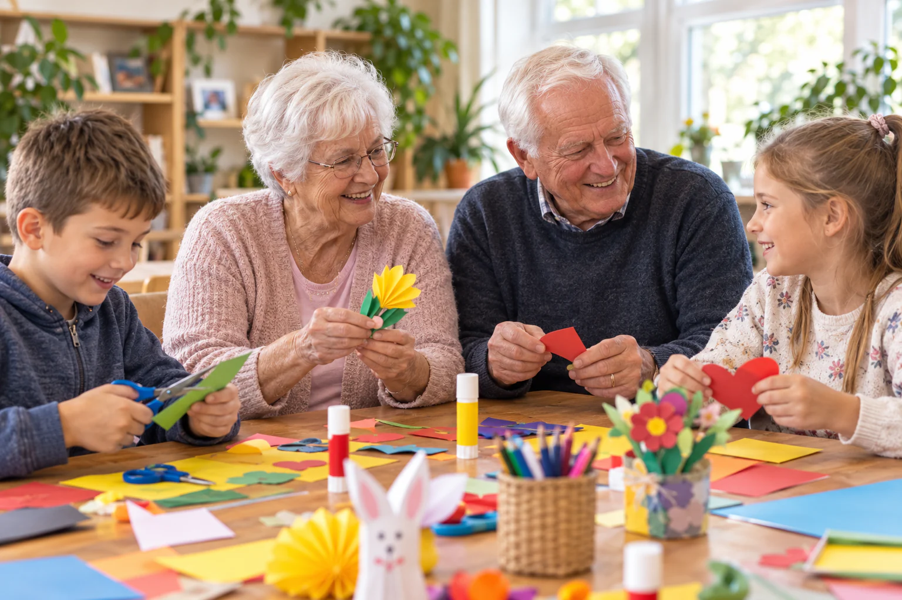
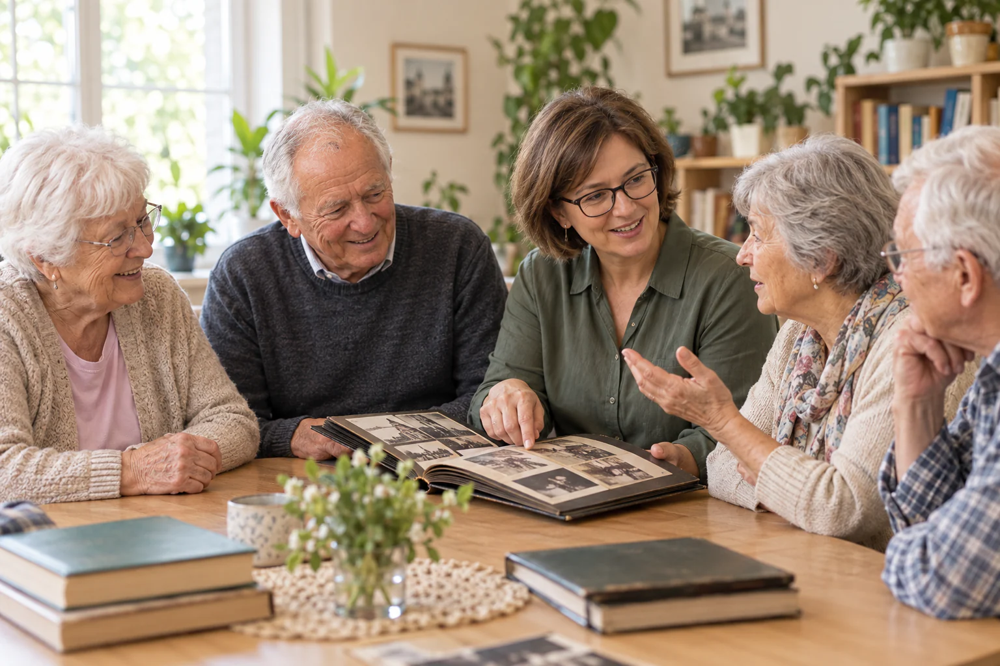

Fundacja Rozwoju Inicjatyw Społecznych „Pomarańcza”
Poznaj ludzi, wartości i zasady, które stoją za Centrum Seniora Pomarańcza.

Z potrzeby tworzenia rzeczy ważnych i bliskich ludziom
Fundacja Rozwoju Inicjatyw Społecznych „Pomarańcza” powstała z potrzeby tworzenia rzeczy ważnych i bliskich ludziom. Jednym z najważniejszych kierunków naszych działań jest wspieranie Seniorów – ich samodzielności, aktywności, relacji z innymi i poczucia, że nadal są ważną częścią lokalnej społeczności.
Wiemy, że wraz z wiekiem zmieniają się potrzeby, tempo życia i codzienne możliwości. Nie oznacza to jednak rezygnacji z pasji, przyjaźni, rozwoju czy dobrej zabawy. Czasem wystarczy odpowiednie miejsce i życzliwi ludzie, żeby znów częściej wychodzić z domu, poznawać nowych znajomych i mieć na co czekać w kolejnym tygodniu.

Senior nie jest u nas biernym odbiorcą zajęć – jest częścią społeczności.
Pomarańcza ma być miejscem otwartym, serdecznym i bez zbędnego dystansu. Chcemy znać naszych uczestników po imieniu, słuchać ich pomysłów i tworzyć program razem z nimi. Naszym celem jest również przeciwdziałanie samotności – rozmowa przy kawie, wspólne śniadanie, urodziny obchodzone razem czy zwykłe pytanie „jak się dziś czujesz?” potrafią znaczyć więcej niż najbardziej rozbudowany program zajęć.
Wolność, intymność, godność i bezpieczeństwo
Organizacja Dziennego Domu Seniora oraz zakres i poziom świadczonych w nim usług uwzględnia w szczególności wolność, intymność, godność i poczucie bezpieczeństwa podopiecznych oraz stopień ich fizycznej i psychicznej sprawności.
Dzienny Dom Seniora funkcjonuje w sposób zapewniający właściwy zakres usług, zgodny z określonymi wskazaniami w oparciu o indywidualne potrzeby jego uczestników.
Zobacz naszą ofertęW organizowaniu życia Seniorów uwzględniamy
- Potrzeby podmiotowego traktowania oraz poszanowania praw i godności
- Potrzeby indywidualnego podejścia do osobistych spraw każdego Seniora
- Zasady współżycia społecznego
- Kształtowanie relacji międzyludzkich na zasadach partnerstwa
- Współpracę z rodzinami